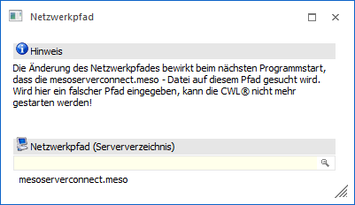
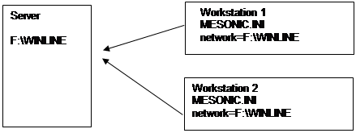

In einer Netzwerkumgebung müssen gewissen Daten zentral verwaltet werden. Das sind vor allem gewisse programmspezifische Daten (wie Formulare, Benutzereinstellungen, etc.) und diese müssen von allen WinLine - Netzwerkbenutzern im Zugriff stehen.
Da auch Daten am SQL-Server gespeichert sind, gibt es am "WinLine"-Server die Datei MESOSERVERCONNECT.MESO, welche angibt, in welchen Datenbanken sich die entsprechenden Daten befinden.
Damit das Programm auf diese Datei zugreifen kann, muss in der Datei MESONIC.INI das Verzeichnis hinterlegt werden, wo die MESOSERVERCONNECT.MESO gefunden werden kann.
Dies kann durch Anwahl des Menüpunktes…
1 Datei
1 Netzwerkpfad
… durchgeführt werden.

Ø Netzwerkpfad (Serververzeichnis)
An dieser Stelle kann der neue Pfad hinterlegt werden. Durch Anklicken der Lupe kann nach dem entsprechenden Verzeichnis gesucht werden.
Buttons
Ø Ok
Durch Anwahl des Buttons "Ok" bzw. der Taste F5 wird die Änderung gespeichert.
Achtung
Die Pfadänderung wird erst nach dem Neustart der Applikation wirksam. Wird ein ungültiger Pfad eingegeben, kann die Applikation nicht mehr gestartet werden. In diesem Falle kontaktieren Sie bitte Ihren Systembetreuer (bzw. korrigieren Sie den Netzwerk-Pfad-Eintrag in der Datei MESONIC.INI).
 |
Hinweis
In der MESONIC.INI im WinLine Server-Verzeichnis selbst darf kein Netzwerk-Verzeichnis hinterlegt sein!
Ø Ende
Durch Anwahl des Buttons "Ende" bzw. der Taste ESC wird das Fenster geschlossen.